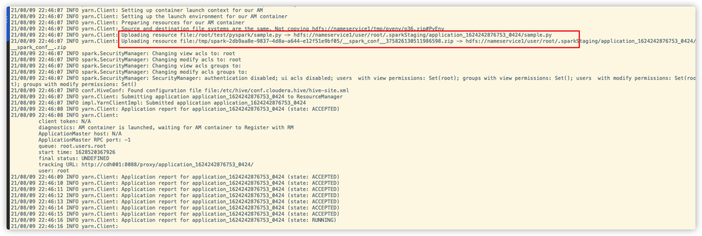
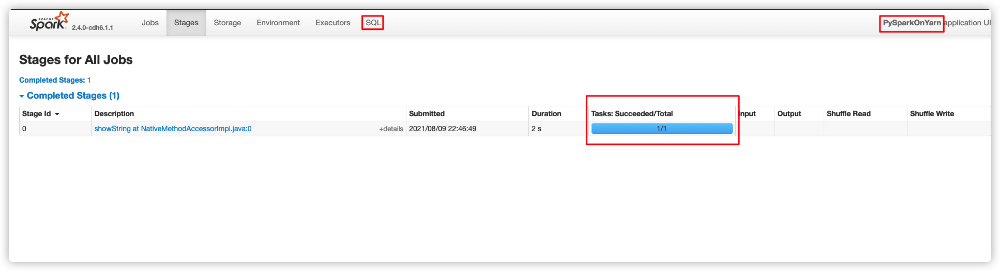
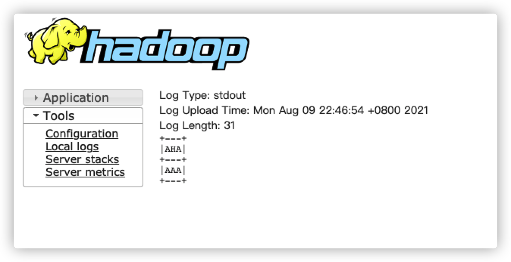

43. [PySpark]PySpark On Yarn
43.1. 废话说在前
Spark是高效的内存计算引擎，可以通过其spark-submit命令将任务提交到Yarn上运行，命令大致类似于如下:
$ ./bin/spark-submit --class path.to.your.Class --master yarn --deploy-mode cluster [options] <app jar> [app options]
$ ./bin/spark-submit --class org.apache.spark.examples.SparkPi \
--master yarn \
--deploy-mode cluster \
--driver-memory 4g \
--executor-memory 2g \
--executor-cores 1 \
--queue thequeue \
examples/jars/spark-examples*.jar \
10
并且Spark也有Python应用编程接口，可以使用Python进行快速的Spark应用开发，在数据分析领域，那叫一个快啊，上手极其轻松。
如果数据量小，跑一跑Spark Local也就好了，代码类似于如下:
from pyspark.sql import SparkSession
spark=SparkSession.builder.appName(SparkOnLocal).getOrCreate()
spark.sql("SELECT 1").show()
spark.stop()
当程序运行的时候会在本地启动Spark服务，具体的安装和部署以及简单的应用编写详见我的另一篇博客PySpark
那么问题来了，当数据量很大的时候，本地机器的资源已经不能胜任开发和分析的工作，怎么办呢？这时候就需要使用PySpark On Yarn了，将我们的PySpark程序提交到Yarn上运行，话不多说，下面开始。
43.2. PySpark shell
和spark-shell一样，pyspark也有shell，如果安装了spark，直接在命令行输入pyspark即可进入pyspark的命令行，SparkSession便已经实例化好了。
Welcome to
____ __
/ __/__ ___ _____/ /__
_\ \/ _ \/ _ `/ __/ '_/
/__ / .__/\_,_/_/ /_/\_\ version 2.4.0-cdh6.1.1
/_/
Using Python version 2.7.5 (default, Nov 16 2020 22:23:17)
SparkSession available as 'spark'.
可以看到，使用的是默认的Python2.7.5的版本，要知道，Python2.7.5已经停止维护了，并且现在大部分的第三方库和应用都是python3编写的，Python3和Python2的语法上也有显著的差别，最显然的当然就是print了，dddd
如果在不同的机器上有着不同的python版本，那么当运行pyspark任务的时候会抛出python版本不一致的异常，提示你DRIVER和WORKER上的Python版本不一致，需要正确设置PYSPARK_PYTHON和PYSPARK_DRIVER_PYTHON这两个变量
43.3. 万全方案
上面抛出的Python版本不一致的问题，你可能会想，直接在全部的机器上安装Python3不就好了，是的，这样问题确实可以解决，但是，在现有的大数据集群环境中，每台节点安装相同版本的Python固然可行，但是耗时耗力，有没有一种万全的方案，让Pyspark使用高版本的Python并且可以不在节点上安装Python3环境呢？
办法是有的！
我们可以通过将Python虚拟环境打包，将其上传到HDFS上，当提交我们的任务时，Spark的worker节点会自动加载该虚拟环境，使用其中的Python环境运行我们的.py程序
43.3.1. 先决条件
将我们的Python3虚拟环境打包，使用.zip的格式上传到HDFS，推荐使用Conda打包，此步骤可以去百度搜索看看。
1.以miniconda为例
安装好miniconda
使用conda create -n $myenv_name python=3.6 并用python=3.6来指定对应python环境的版本
在创建好的环境(在miniconda 安装目录的env文件夹下面)使用pip 安装好需要的包
使用zip 命令将 env文件夹下面对应$myenv_name的文件夹打包 该文件夹包含了所有的 环境所需的文件 打包后 发送到集群的各台机器上即可工作
在spark提交命令中 使用 –conf spark.yarn.appMasterEnv.PYSPARK_PYTHON=./PyEnv/py36/bin/python来指定对应的python指定文件 PyEnv 是将压缩包解压后的目录py36是$myenv_name python是对应环境下面的python可执行文件
43.3.2. 提交任务
完整的提交命令如下:
spark-submit \
--master yarn \
--deploy-mode cluster \
--driver-memory 1g \
--driver-cores 2 \
--num-executors 3 \
--executor-memory 5G \
--conf spark.executor.pyspark.memory=2G \
--executor-cores 4 \
--conf spark.yarn.maxAppAttempts=1 \
--conf spark.driver.maxResultSize=2G \
--conf spark.dynamicAllocation.enabled=false \
--archives hdfs://nameservice1/tmp/pyenv/p36.zip#PyEnv \
--conf spark.yarn.appMasterEnv.PYSPARK_PYTHON=PyEnv/p36/bin/python \
--conf spark.yarn.appMasterEnv.PYSPARK_DRIVER_PYTHON=PyEnv/p36/bin/python \
--conf spark.executorEnv.PYSPARK_PYTHON=PyEnv/p36/bin/python \
--conf spark.executorEnv.PYSPARK_DRIVER_PYTHON=PyEnv/p36/bin/python \
./sample.py
其中sample.py的内容如下：
from pyspark.sql import SparkSession
spark = SparkSession.builder.appName("PySparkOnYarn").getOrCreate()
spark.sql("SELECT 'AAA' AS AHA").show()
spark.stop()
43.3.3. 命令说明
归档文件
--archives–archives ./py36.zip#PyEnv 这个参数的意思是将压缩包 zip文件分发到集群上,将压缩文件解压,解压后的文件全部放在 # 后面指定的文件夹下 PyEnv 这个目录下面,也就是说在代码中可以使用 PyEnv/xxx.txt 来读取压缩包中的xxx.txt文件,多个压缩文件使用逗号分隔符分割,如果压缩包里面有一个跟文件夹root_dir/,那么解压后将变成 PyEnv/root_dir
一般资源文件
--files--files ./config.json#my_config.json这个参数的意思是 将config.json文件分发到集群上 之后使用my_config.json来访问这个文件#后面相当于是文件的别名 文件表示使用逗号分隔符分割代码文件
--py-files有时候提交的pyspark python脚本文件不止一个 互相之间要引用 这时要 例如 –py-files ./feature.py 这个参数的意思是 将feature.py 文件分发到集群上 放在和主脚本在一起的代码目录下 这样就可以引用feature.py中的函数了 文件表示使用逗号分隔符分割
下面这三个命令都是将Driver和Worker节点的Python环境设置为我们手动打包上传的Python环境
--conf spark.yarn.appMasterEnv.PYSPARK_PYTHON=PyEnv/p36/bin/python \
--conf spark.yarn.appMasterEnv.PYSPARK_DRIVER_PYTHON=PyEnv/p36/bin/python \
--conf spark.executorEnv.PYSPARK_PYTHON=PyEnv/p36/bin/python \
--conf spark.executorEnv.PYSPARK_DRIVER_PYTHON=PyEnv/p36/bin/python \
43.4. RUN起来！
提交


